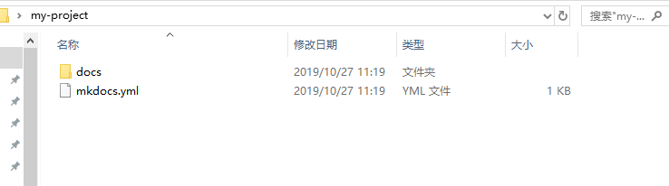
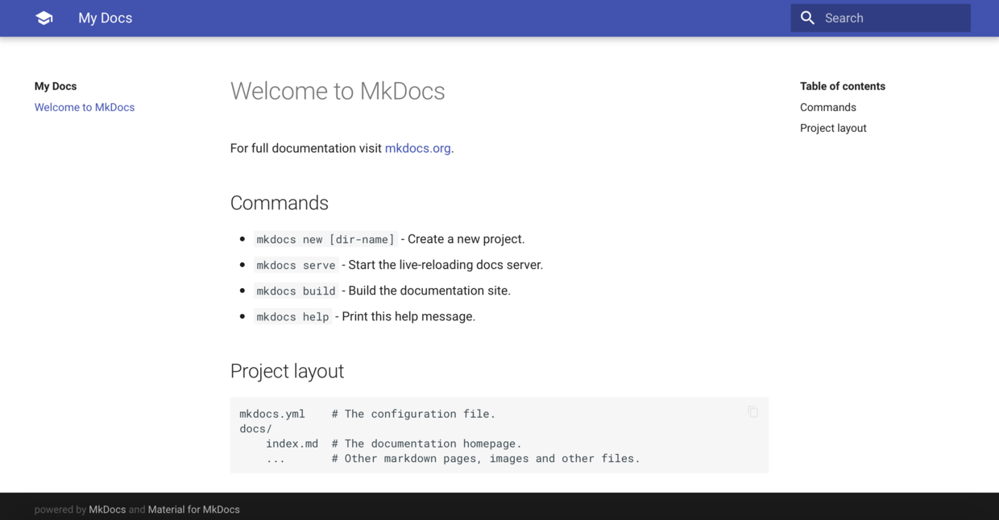

061 基于mkdocs-material搭建个人静态博客
本文概述¶
mkdocs-material入门，包括安装、运行、发布至github-pages及个人站点
mkdocs-material介绍¶
符合google material ui规范的静态文档网站生成器，使用markdown进行文档书写
mkdocs
- python编写的markdown解释器、编译器，带有本地cli工具
- 自带基于Tornado的小型http服务，用于本地调试
- 内置一键式发布至GitHub Pages
- 内置mkdocs风格、readthedocs风格的主题，并支持自定义主题
- 支持调用python模块实现语法及渲染的扩展
mkdocs-material
- python模块，符合google material ui规范的mkdocs自定义主题
- 针对特定语法、功能做了渲染优化
- 根据客户端浏览器页面尺寸自动缩放，对PC、移动设备都友好
- 丰富的页面配色，多达19种主体配色和16种悬停链接文字配色
- 支持中文搜索
- 支持统计功能，如百度统计，谷歌统计
安装¶
pip install mkdocs mkdocs-material
若下载慢，可更换安装源为豆瓣
pip install --trusted-host pypi.douban.com -i http://pypi.douban.com/simple/ mkdocs mkdocs-material
初始化项目¶
mkdocs new my-project
会生成my-project目录，进入该目录里，可以看到默认放置了一些文件，包括mkdocs.yml，这是主配置文件 docs文件夹中是我们写的makedown文件 

修改主题¶
mkdocs.yml里添加:
theme: name: material
运行¶
# 在my-project目录里执行 mkdocs serve
可以输入下面的地址
mkdocs serve --dev-addr=192.168.31.199:1666 或者 mkdocs serve -a 127.0.0.1:9999

发布到GitHub pages¶
通过mkdocs gh-deploy自动编译出html并发布至GitHub pages，步骤如下
初始化repo
1.在github上创建一个repo，名字叫my-project（可以是其他名，这里先假设叫my-project），创建repo时候选择初始化带有README.md 2.将repo同步到本地，使用git clone
导入项目
1.将mkdocs根目录（即my-project目录）下的所有东西移到刚刚git clone下来的git目录下 2.然后可以将最早创建的mkdocs根目录（即my-project目录）删除了
发布
在本地git目录下执行
mkdocs gh-deploy
发布到个人HTTP Server¶
通过mkdocs build编译出html并手动同步至http server的根目录
生成站点文件
在git目录下执行命令
mkdocs build
命令执行完毕后可以看到site目录
发布至http server
将site目录里的所有东西拷贝到http server的根目录下
mkdocs.yml注意事项¶
由于是yaml格式，因此首先要符合yaml的语法要求
docs下需要一个index.md，作为站点首页
文档层次结构虽然可以很多层，但最佳实践是控制在2层内，最多不要超过3层，否则展示会不够友好
添加页面¶
在my-project/docs/里放置.md文件，可以自行组织目录结构
然后在mkdocs.yml里添加，比如这样:
nav:
- 介绍: index.md
- 安装:
- 本地环境搭建: install/local.md
- 发布至GitHub Pages: install/github-pages.md
- 发布至自己的HTTP Server: install/http-server.md
- 语法:
- 语法总览: syntax/main.md
- 标题: syntax/headline.md
- 段落: syntax/paragraph.md
- 上面的index.md就是放置在my-project/docs/index.md
- 上面的local.md就是放置在my-project/docs/install/local.md
添加扩展¶
只有添加了扩展，才能完美使用mkdocs-material官方支持的所有markdown语法
mkdocs.yml里添加:
markdown_extensions:
- admonition
- codehilite:
guess_lang: false
linenums: false
- toc:
permalink: true
- footnotes
- meta
- def_list
- pymdownx.arithmatex
- pymdownx.betterem:
smart_enable: all
- pymdownx.caret
- pymdownx.critic
- pymdownx.details
- pymdownx.emoji:
emoji_generator: !!python/name:pymdownx.emoji.to_png
- pymdownx.inlinehilite
- pymdownx.magiclink
- pymdownx.mark
- pymdownx.smartsymbols
- pymdownx.superfences
- pymdownx.tasklist
- pymdownx.tilde
markdown语法¶
mkdocs-material支持几十种markdown语法，有许多很酷炫的功能与效果，由于篇幅有限，无法在这一一展示，因此这里仅列举下所支持的主要语法
1.标题 2.段落 3.引用 4.表格 5.代码
- 行内
- 区块
- 高亮
6.字体样式
- 斜体,粗体,粗斜体
- 上标,下标
- 下划线
- 横线
- 下划线+横线
7.列表
- 无序列表
- 有序列表
- 任务列表
8.分割线 9.链接
- 普通链接
- 自动链接
- 锚点提示
10.图片
- 行内式
- 参考式
11.转义 12.高亮
- 代码高亮
- 背景高亮
13.注解
- 介绍
- 完整格式
- 空标题
- 无标题
- 无类型
- 折叠
- 11种颜色样式
- 嵌套
14.脚注 15.元信息 16.数学公式
- 介绍
- 导入js
- 用法
17.emoji
- 介绍
- 工作原理
- 最佳实践
18.特殊符号 19.嵌套
- 介绍
- 注解-注解
- 列表-列表
- 引用-引用
- 注解-代码块
- 列表-代码块
- 引用-代码块
- ×××区块-代码
- 绿色区块-代码
- 红色区块-代码
- 绿接红区块-代码
- 注解-列表-引用
- 列表-列表-引用
- 引用-引用-代码
其他功能¶
mkdocs-material本身还支持如下功能：
- 添加js，可用于站点统计（如百度统计，谷歌统计）
- 页面以及跳转文字的配色
- 中文搜索
最佳实践¶
如果希望自己所写的markdown可以兼容各个markdown编辑器，那么只需了解markdown的传统语法即可
如果想让自己所写的markdown发布到web服务器，例如GitHub Pages、自己搭建的HTTP Server，那么可以考虑使用本文所介绍的语法，以实现丰富多样的渲染效果。
笔者建议：尽量使用传统语法，只在必要时候才使用本文介绍的语法。因为排版简洁、条理清晰才能带来最舒服的阅读感受。